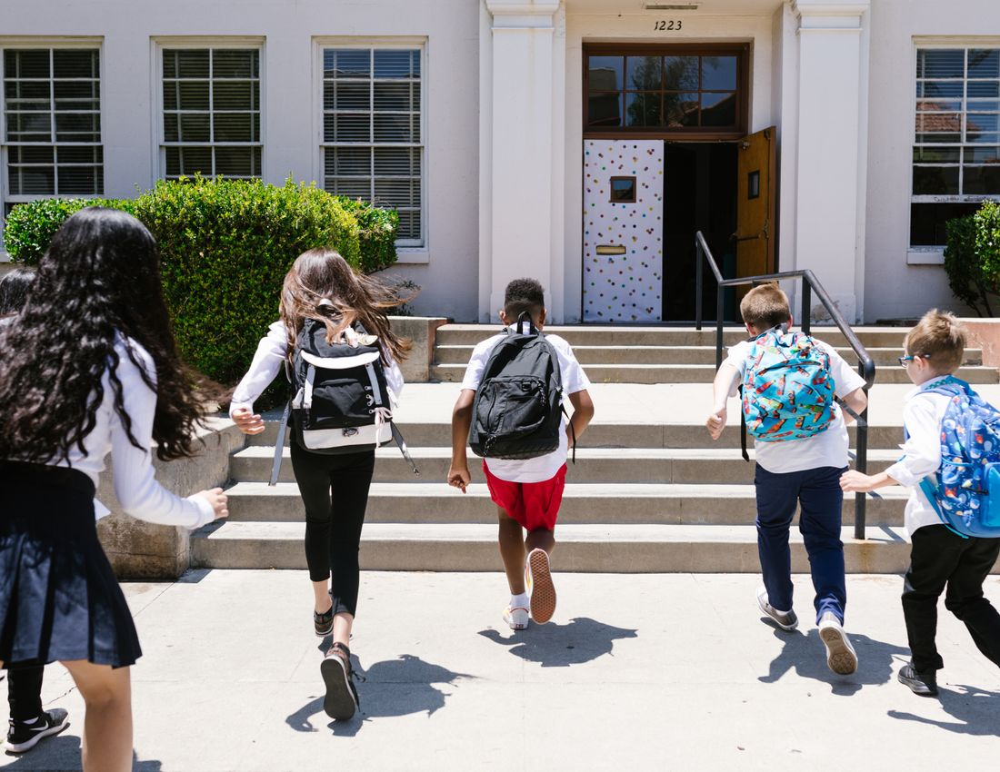

Da generazioni la Scuola Santa Maria del Paradiso accompagna i bambini e i ragazzi di Viterbo in un cammino che unisce conoscenza, valori e crescita personale.
Crediamo in una scuola in cui ogni studente si senta accolto, conosciuto e valorizzato. Per questo coltiviamo un ambiente sereno, in cui imparare diventa un'esperienza positiva e l'educazione cammina insieme alla cura della persona.

Una scuola paritaria riconosciuta, di ispirazione cristiana, che accompagna bambini e ragazzi in un unico cammino educativo dall'Infanzia alla Secondaria di I grado.
Mettiamo al centro lo studente, con i suoi tempi, talenti e bisogni, perché ciascuno possa fiorire.
Educhiamo l'intelligenza e il cuore, accompagnando i ragazzi a diventare persone libere e responsabili.
Scuola e famiglia camminano insieme, condividendo obiettivi, fiducia e responsabilità.
«Non dobbiamo aver paura della fatica e del dolore»: un invito a educare alla speranza, alla perseveranza e alla bellezza del crescere insieme.
Dalla scoperta del gioco fino alle prime grandi scelte: accompagniamo la crescita di ogni studente con continuità e attenzione.
Uno spazio sicuro e accogliente dove imparare a stare insieme, esprimersi e scoprire il mondo attraverso il gioco e la creatività.
Le fondamenta del sapere e del carattere: competenze solide, curiosità e autonomia, in un clima di fiducia e collaborazione.
Conoscenze più ampie, pensiero critico e orientamento, per affrontare con consapevolezza le prime scelte sul proprio futuro.
Saremo felici di accoglierti per raccontarti il nostro progetto educativo e mostrarti gli ambienti in cui crescono i nostri studenti.